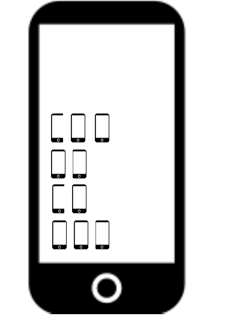

The welcome screen of most current smartphones is a collection of representations of vintage technologies. There is an icon for the camera that represents an old fashioned camera, ditto for the radio (a radio), for folders (folders), for messages (an envelope), for the planner (a paper planner), for the voice recorder (a microphone), for the clock (an analog clock face), for a lamp (an incandescence light bulb) and for settings (a gear). And of course, an icon for making phone calls (the handset of a phone, or even the wheel of a rotary phone). Other vintage technologies surface iconically in the app folder, we do not even bother to mention them.
Are these icons passing the test of time? For some reason, they survive the near disappearance of the objects they represent – for newer generations, these objects only survive in the icons. A nice design paradox will arise at some point. When all the above mentioned functions will be mostly if not completely absorbed by the smartphone, we may run short of meaningful icons. The only icon will be an all-purpose icon – by definition, pretty useless.
This fate may also be that of objects themselves. As many object tend to resemble smartphones (why?) how are we to represent them iconically in a way that distinguishes them from smartphones?